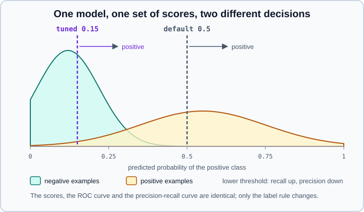

Tuning the Decision Threshold in scikit-learn
|
This content was generated with the assistance of AI and should be verified against the official documentation before being relied on in production. |
A binary classifier answers two different questions. The statistical question is "how likely is each class for this
sample?", answered by predict_proba or decision_function. The decision question is "which action do I take?", and
predict answers it with a fixed rule that is usually not the right one for your problem. This page explains that rule, how
to replace it with a threshold chosen for your metric or costs using TunedThresholdClassifierCV and
FixedThresholdClassifier (available since scikit-learn 1.5), how to look at a metric across all thresholds, and the traps
(tuning on training data, a wrong positive label, probabilities that are not calibrated).
It targets scikit-learn 1.9 (1.9.1 at the time of writing) with NumPy 2.5 and pandas 3.1, and was checked in October 2026. Examples target Python 3.13 or 3.14 and were run on Python 3.13. Every example was run with Python 3.13, scikit-learn 1.9.1 and NumPy 2.5.4, and the printed output is the real output. The metrics are explained in Metrics & Scoring, the probabilities in Probability Calibration, and the cross-validation that runs inside the tuner in Cross-Validation & Splitters. The class-imbalance discussion is in Model Evaluation & Validation.
The hard-coded rule behind predict
For a binary classifier scikit-learn predicts the positive class when predict_proba gives a probability greater than or
equal to 0.5, or when decision_function gives a score above 0. Both are the same cut-off on two different scales for
logistic regression. The first example checks that on a rare-positive problem (about 6 % positives) and shows how poor the
default can be for a use case that cares about finding the positives:
from sklearn.datasets import make_classification
from sklearn.linear_model import LogisticRegression
from sklearn.metrics import precision_score, recall_score
from sklearn.model_selection import train_test_split
X, y = make_classification(n_samples=4000, weights=[0.95], flip_y=0.02, class_sep=0.8, random_state=0)
X_train, X_test, y_train, y_test = train_test_split(X, y, stratify=y, random_state=0)
clf = LogisticRegression().fit(X_train, y_train)
proba = clf.predict_proba(X_test)[:, 1]
# predict() is the same as thresholding at 0.5
print("same as predict:", ((proba >= 0.5).astype(int) == clf.predict(X_test)).all())
print("decision_function > 0 equals proba > 0.5:",
((clf.decision_function(X_test) > 0) == (proba > 0.5)).all())
print("positives in test:", int(y_test.sum()), "of", len(y_test))
print(f"threshold 0.5: precision {precision_score(y_test, clf.predict(X_test)):.2f}, recall {recall_score(y_test, clf.predict(X_test)):.2f}")same as predict: True
decision_function > 0 equals proba > 0.5: True
positives in test: 59 of 1000
threshold 0.5: precision 0.67, recall 0.07The model finds only 7 % of the positives. Nothing is wrong with the model: positives are rare, so very few samples reach a probability of 0.5. If a missed positive costs more than a false alarm (a tumour screening, a fraud alert, a failing machine), the useful cut-off is far lower. If false alarms are expensive (blocking a legitimate payment), it may be higher. The user guide’s example is a screening test, where physicians prioritise recall and accept more false positives.

The ROC curve and the precision-recall curve are built from the scores and do not depend on the threshold; moving the
threshold only moves the operating point along them. Changing the threshold is also different from re-weighting classes
during training (class_weight, sample_weight), which changes the fitted model and its probabilities. Moving the
threshold on the scores of an already good probability model is the cleaner way to encode a business trade-off.
TunedThresholdClassifierCV
TunedThresholdClassifierCV is a meta-estimator: it wraps a binary classifier,
finds the threshold that maximises a metric by cross-validation, and then behaves like a classifier whose predict uses
that threshold. Its signature in 1.9 is:
TunedThresholdClassifierCV(estimator, *, scoring="balanced_accuracy", response_method="auto", thresholds=100,
cv=None, refit=True, n_jobs=None, random_state=None, store_cv_results=False)Its arguments:
| Argument | Meaning |
|---|---|
|
The metric to maximise: a scorer name for binary classification (see |
|
|
|
An integer (the number of thresholds used to discretise the classifier output; default 100) or an array of the thresholds to try. |
|
|
|
Refit the classifier on all the training data once the threshold is known (default |
|
Parallelism over folds; seed used when |
|
Keep the scores and thresholds in |
After fit the attributes are estimator_ (the fitted classifier used to predict), best_threshold_, best_score_ (the
metric at that threshold, cross-validated), cv_results_ (a dictionary with the keys "thresholds" and "scores", only
if requested), classes_, and n_features_in_ and feature_names_in_ when the wrapped estimator has them.
from sklearn.datasets import make_classification
from sklearn.linear_model import LogisticRegression
from sklearn.metrics import make_scorer, f1_score, precision_score, recall_score
from sklearn.model_selection import TunedThresholdClassifierCV, train_test_split
X, y = make_classification(n_samples=4000, weights=[0.95], flip_y=0.02, class_sep=0.8, random_state=0)
X_train, X_test, y_train, y_test = train_test_split(X, y, stratify=y, random_state=0)
base = LogisticRegression()
tuned = TunedThresholdClassifierCV(base, scoring="f1", cv=5, random_state=0, store_cv_results=True)
tuned.fit(X_train, y_train)
print("best threshold:", round(tuned.best_threshold_, 3), " best CV f1:", round(tuned.best_score_, 3))
print("refitted estimator:", tuned.estimator_)
for name, model in [("default 0.5", base.fit(X_train, y_train)), ("tuned", tuned)]:
p = model.predict(X_test)
print(f"{name:12s} precision {precision_score(y_test, p):.2f} recall {recall_score(y_test, p):.2f} f1 {f1_score(y_test, p):.2f}")
print(sorted(tuned.cv_results_))
print(tuned.cv_results_["thresholds"].shape, tuned.cv_results_["scores"].shape)
# a constraint instead of a plain maximum: best precision subject to recall >= 0.6 via a custom scorer
def precision_if_recall(y_true, y_pred, min_recall=0.6):
return precision_score(y_true, y_pred, zero_division=0) if recall_score(y_true, y_pred) >= min_recall else 0.0
constrained = TunedThresholdClassifierCV(LogisticRegression(), scoring=make_scorer(precision_if_recall),
cv=5, random_state=0).fit(X_train, y_train)
p = constrained.predict(X_test)
print("constrained threshold:", round(constrained.best_threshold_, 3),
f"precision {precision_score(y_test, p):.2f} recall {recall_score(y_test, p):.2f}")best threshold: 0.147 best CV f1: 0.363
refitted estimator: LogisticRegression()
default 0.5 precision 0.67 recall 0.07 f1 0.12
tuned precision 0.31 recall 0.51 f1 0.38
['scores', 'thresholds']
(100,) (100,)
constrained threshold: 0.098 precision 0.25 recall 0.69Maximising F1 moved the threshold from 0.5 to 0.147 and lifted recall from 7 % to 51 % at the cost of precision (67 % to 31 %), and the F1 on the test set tripled. The last block shows that any scorer can express a business rule, here "the best precision as long as recall stays at or above 0.6"; the recall target is met on the test set (0.69) because the threshold was chosen on cross-validated data and the test set is a different sample.
The wrapped classifier is cloned and fitted on each training fold to get out-of-fold scores, a metric is computed at every
candidate threshold on the validation folds, and the threshold with the best mean metric is kept. With refit=True the
classifier is then refitted on the whole training set, which is what predict_proba and predict use. The cross-validated
best_score_ is an optimistic estimate of future performance, because it was used to choose the threshold: judge the final
model on held-out data, as the printed test-set metrics do.
The class of interest and pos_label
Metrics such as F1, precision and recall depend on which class is "positive". A string scorer like "f1" always treats the
class 1 (the greater label) as positive. If your class of interest has another label, make a scorer that passes pos_label,
as the user guide shows for a rare class labelled 0:
from sklearn.datasets import make_classification
from sklearn.linear_model import LogisticRegression
from sklearn.metrics import f1_score, make_scorer
from sklearn.model_selection import TunedThresholdClassifierCV
X, y = make_classification(n_samples=1000, weights=[0.1, 0.9], random_state=0)
pos_label = 0 # the rare class is labelled 0 here
scorer = make_scorer(f1_score, pos_label=pos_label)
model = TunedThresholdClassifierCV(LogisticRegression(), scoring=scorer, cv=5, random_state=0)
model.fit(X, y)
print("classes_:", model.classes_)
print("best_threshold_:", round(model.best_threshold_, 3), " best_score_:", round(model.best_score_, 3))
print("score of the refitted model on its own training data:", round(scorer(model, X, y), 3))classes_: [0 1]
best_threshold_: 0.374 best_score_: 0.862
score of the refitted model on its own training data: 0.887Note the gap between the cross-validated best_score_ (0.862) and the score of the refitted model on its own training data
(0.887): the second number is computed on data the model has seen and is not an estimate of anything you should report.
With string scorers the pos_label of the metric comes from its default, so check that it is the class you care about.
Costs instead of a standard metric
When every kind of error has a price, define the metric as the (negated) total cost and let the tuner minimise it. A scorer is "greater is better", so return minus the cost:
import numpy as np
from sklearn.datasets import make_classification
from sklearn.ensemble import HistGradientBoostingClassifier
from sklearn.metrics import make_scorer, confusion_matrix
from sklearn.model_selection import TunedThresholdClassifierCV, train_test_split
# cost-sensitive: a missed positive (FN) costs 10, a false alarm (FP) costs 1, correct decisions are free
def net_gain(y_true, y_pred):
tn, fp, fn, tp = confusion_matrix(y_true, y_pred, labels=[0, 1]).ravel()
return -(10 * fn + 1 * fp)
X, y = make_classification(n_samples=6000, weights=[0.9], flip_y=0.03, class_sep=0.7, random_state=1)
X_train, X_test, y_train, y_test = train_test_split(X, y, stratify=y, random_state=1)
scorer = make_scorer(net_gain)
default = HistGradientBoostingClassifier(random_state=0).fit(X_train, y_train)
tuned = TunedThresholdClassifierCV(HistGradientBoostingClassifier(random_state=0), scoring=scorer,
cv=5, thresholds=np.linspace(0, 1, 101), random_state=0).fit(X_train, y_train)
print("default cost on test:", -scorer(default, X_test, y_test))
print("tuned cost on test:", -scorer(tuned, X_test, y_test), " threshold:", round(tuned.best_threshold_, 3))default cost on test: 676
tuned cost on test: 569 threshold: 0.05With a false negative ten times as costly as a false positive, the best cut-off is as low as 0.05, and the total cost on the
test set drops from 676 to 569 (16 %). The explicit thresholds array shows the other form of the argument. Cost-based
tuning is only as good as the cost numbers: they come from the business, not from the data.
Scales, shortcuts and limits
import numpy as np
from sklearn.datasets import make_classification, make_blobs
from sklearn.linear_model import LogisticRegression
from sklearn.svm import LinearSVC
from sklearn.metrics import f1_score
from sklearn.model_selection import TunedThresholdClassifierCV, train_test_split
X, y = make_classification(n_samples=3000, weights=[0.9], flip_y=0.02, class_sep=0.8, random_state=0)
X_train, X_test, y_train, y_test = train_test_split(X, y, stratify=y, random_state=0)
# decision_function scores: the threshold lives on the score scale (0 is the default cut-off)
svm = TunedThresholdClassifierCV(LinearSVC(), scoring="f1", response_method="decision_function", cv=5, random_state=0).fit(X_train, y_train)
print("LinearSVC threshold on the margin scale:", round(svm.best_threshold_, 3))
# a single hold-out split instead of 5 folds: cv given as a float
single = TunedThresholdClassifierCV(LogisticRegression(), scoring="f1", cv=0.25, random_state=0).fit(X_train, y_train)
print("float cv threshold:", round(single.best_threshold_, 3))
# prefit: tune on NEW data, never on the data used to train the classifier
fitted = LogisticRegression().fit(X_train, y_train)
X_val, X_hold, y_val, y_hold = train_test_split(X_test, y_test, test_size=0.5, stratify=y_test, random_state=0)
pre = TunedThresholdClassifierCV(fitted, scoring="f1", cv="prefit", refit=False).fit(X_val, y_val)
print("prefit threshold:", round(pre.best_threshold_, 3), " hold-out f1 %.3f" % f1_score(y_hold, pre.predict(X_hold)),
"vs default %.3f" % f1_score(y_hold, fitted.predict(X_hold)))
# multiclass is rejected
Xm, ym = make_blobs(n_samples=90, centers=3, random_state=0)
try:
TunedThresholdClassifierCV(LogisticRegression()).fit(Xm, ym)
except Exception as exc:
print(type(exc).__name__, str(exc)[:100])
# explicit thresholds array and pos_label
t = TunedThresholdClassifierCV(LogisticRegression(), scoring="f1", thresholds=np.array([0.05, 0.1, 0.2, 0.5]), cv=3, random_state=0).fit(X_train, y_train)
print(t.best_threshold_)LinearSVC threshold on the margin scale: -0.348
float cv threshold: 0.336
prefit threshold: 0.313 hold-out f1 0.667 vs default 0.563
ValueError Only binary classification is supported. Unknown label type: multiclass
0.2What the example shows:
-
With
response_method="decision_function"the threshold is on the margin scale of the model, where 0 is the default cut-off; here the tuned value is -0.348. A negative margin threshold means "predict positive a bit earlier". -
A float
cvruns one single train/validation split, which is cheaper than five folds but gives a noisier threshold. -
cv="prefit"skips the internal cross-validation: the wrapped classifier must already be fitted,refitmust beFalse, and the threshold is tuned on the data given tofit. The user guide warns to be extremely careful: never tune the threshold on the same data used to train the classifier, which risks overfitting. Use a separate validation set, as above. -
Only binary classification is supported; a multiclass target raises
ValueError. -
thresholdscan be an explicit array. A coarse list may miss the best cut-off; the default of 100 thresholds is usually fine.
To get an honest estimate of the whole procedure (fit, tune, predict), evaluate the tuner itself with an outer cross-validation, so the threshold is chosen inside every training fold:
from sklearn.datasets import make_classification
from sklearn.linear_model import LogisticRegression
from sklearn.model_selection import TunedThresholdClassifierCV, cross_val_score
X, y = make_classification(n_samples=3000, weights=[0.92], flip_y=0.03, class_sep=0.8, random_state=0)
tuned = TunedThresholdClassifierCV(LogisticRegression(), scoring="f1", cv=5, random_state=0)
print("plain LogisticRegression :", cross_val_score(LogisticRegression(), X, y, cv=5, scoring="f1").mean().round(3))
print("with threshold tuning :", cross_val_score(tuned, X, y, cv=5, scoring="f1").mean().round(3))plain LogisticRegression : 0.349
with threshold tuning : 0.584Wrap a complete pipeline, not just the last step, so that the preprocessing is refitted in every fold:
TunedThresholdClassifierCV(make_pipeline(StandardScaler(), LogisticRegression()), ...). Because the tuner is an
ordinary classifier, it can be searched with GridSearchCV (parameters of the wrapped model are reached with the prefix
estimator__) or stacked in larger compositions, as described in
Grid, Randomized & Halving Search.
FixedThresholdClassifier: set the threshold yourself
When the threshold is dictated from outside (a regulatory limit, a value agreed with the business, a threshold computed
elsewhere), FixedThresholdClassifier (arguments estimator, threshold, pos_label and response_method) applies it
without any tuning. threshold="auto" means 0.5 for probabilities and 0 for decision scores. By default fit refits the
wrapped classifier; to keep an already fitted model untouched, wrap it in FrozenEstimator, which makes fit a no-op
(see FrozenEstimator).
import numpy as np
from sklearn.datasets import make_classification
from sklearn.linear_model import LogisticRegression
from sklearn.metrics import f1_score, precision_score, recall_score, metric_at_thresholds
from sklearn.frozen import FrozenEstimator
from sklearn.model_selection import FixedThresholdClassifier, train_test_split
X, y = make_classification(n_samples=3000, weights=[0.9], flip_y=0.02, class_sep=0.8, random_state=0)
X_train, X_val, y_train, y_val = train_test_split(X, y, stratify=y, random_state=0)
clf = LogisticRegression().fit(X_train, y_train)
fixed = FixedThresholdClassifier(FrozenEstimator(clf), threshold=0.2).fit(X_val, y_val) # fit() does not refit clf
print("coefficients unchanged:", np.allclose(fixed.estimator_.estimator.coef_, clf.coef_))
for t in (0.5, 0.2):
pred = FixedThresholdClassifier(FrozenEstimator(clf), threshold=t).fit(X_val, y_val).predict(X_val)
print(t, "precision %.2f recall %.2f" % (precision_score(y_val, pred), recall_score(y_val, pred)))
proba = clf.predict_proba(X_val)[:, 1]
f1s, thr = metric_at_thresholds(y_val, proba, f1_score)
print(len(thr), "thresholds; best f1 %.3f at %.3f" % (f1s.max(), thr[f1s.argmax()]))
prs, thr = metric_at_thresholds(y_val, proba, lambda yt, yp: (precision_score(yt, yp, zero_division=0), recall_score(yt, yp)))
print(prs.shape)coefficients unchanged: True
0.5 precision 0.60 recall 0.40
0.2 precision 0.47 recall 0.75
750 thresholds; best f1 0.620 at 0.326
(750, 2)The same example introduces metric_at_thresholds, new in scikit-learn 1.9. It evaluates a metric function at every unique
score threshold and returns the metric values and the thresholds in that order, so you can plot a metric against the
threshold, which is the most useful way to choose when you care about several metrics. A metric that returns several numbers
(here precision and recall as a tuple) gives a two-dimensional array with one row per threshold. The function is evaluated
on the validation data above; picking the threshold with the highest F1 on that data and reporting the F1 on the same data
would be optimistic, so confirm the choice on a further hold-out set. The older routes to the same picture are
precision_recall_curve, roc_curve and det_curve, which return the scores at every threshold for one fixed metric.
Plotting classes such as PrecisionRecallDisplay are in
Display Objects.
Pitfalls
-
Tuning on the training data. A threshold chosen on the data the model was fitted on favours that data. Let
TunedThresholdClassifierCVrun its internal cross-validation (the default), or use a separate validation set withcv="prefit". -
Reporting the tuned score as the result.
best_score_was used to choose the threshold. Measure on a test set or with an outer cross-validation. -
Wrong positive class. String scorers treat label
1(the greater label) as positive. Usemake_scorer(..., pos_label=...)when the class of interest has another label, or encode the target so that it is1. -
Thresholds are not portable. A threshold of 0.15 for one model and one class prevalence says nothing about another model or a population with a different base rate. Re-tune after retraining, after a change in prevalence, and when switching between
predict_probaanddecision_functionscales. -
Probabilities are not automatically calibrated. Tuning a threshold works on scores of any scale, but if you read the threshold as a probability or use it in an expected-cost formula, calibrate the model first (Probability Calibration). Note that
SVC(probability=True)is deprecated in 1.9; useCalibratedClassifierCV. -
Binary only. For multiclass problems choose the decision rule yourself from
predict_proba. -
The tuner changes
predict, notpredict_proba.predict_probaanddecision_functionof the tuned model are those of the wrapped classifier, so AUC and calibration plots do not change. -
One metric. Maximising F1 hides that precision fell. Report precision, recall and a confusion matrix at the chosen threshold.
Where older books and tutorials are outdated
-
Before scikit-learn 1.5 there was no built-in threshold tuner. Tutorials loop over thresholds by hand, often on the test set, or write a wrapper class.
TunedThresholdClassifierCV(1.5) does the search with proper cross-validation and returns a normal classifier. -
Aurélien Géron’s 2025 book Hands-On Machine Learning with Scikit-Learn and PyTorch already shows
TunedThresholdClassifierCV; older material relies on manual loops orprecision_recall_curvealone. -
Tutorials that call
plot_roc_curve,plot_precision_recall_curveorplot_confusion_matrixuse functions removed in 1.2; useRocCurveDisplay.from_estimator,PrecisionRecallDisplay.from_estimatorandConfusionMatrixDisplay.from_estimator, or thefrom_predictionsvariants. -
Material on calibrating a model that is already fitted with
cv="prefit"has been superseded by wrapping the fitted model inFrozenEstimator(1.6); the same wrapper is the way to keep a fitted model when applying a fixed threshold. -
metric_at_thresholdsis new in 1.9, so material before that plots metrics against thresholds with hand-written loops.